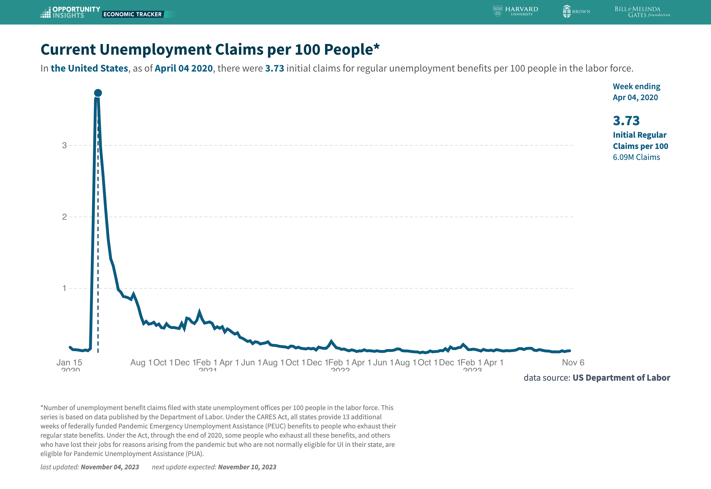
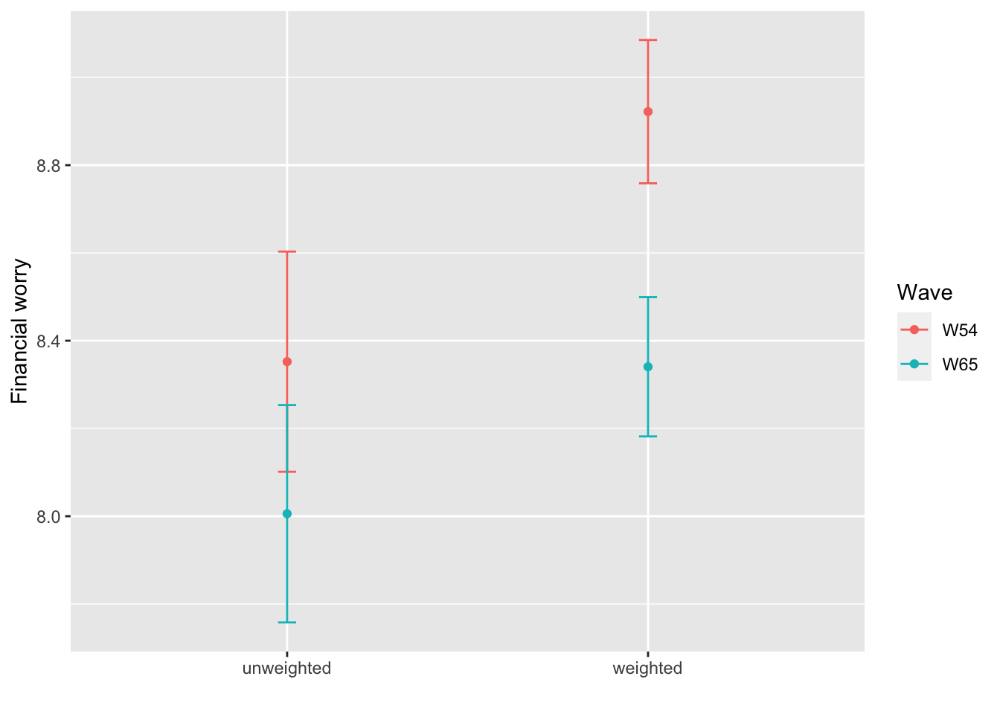
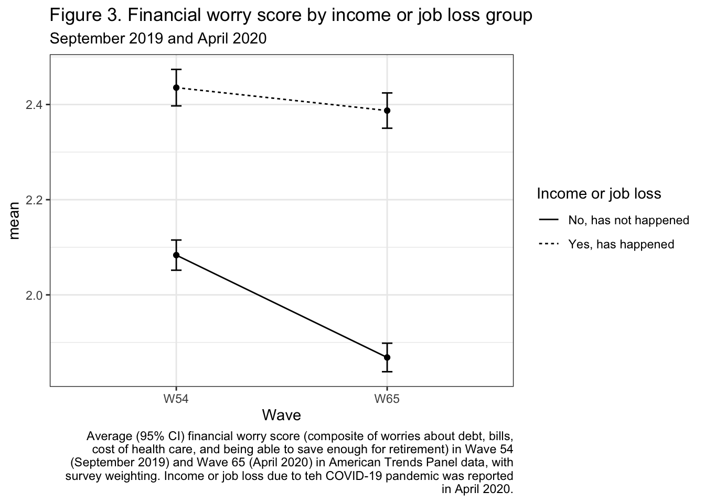
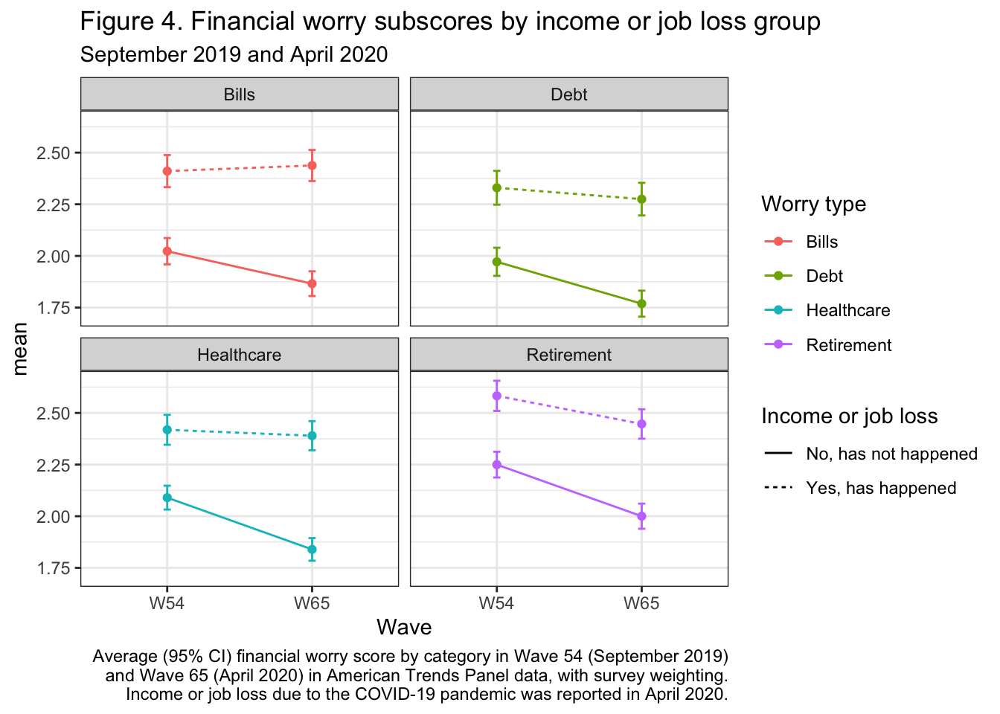

library(foreign)
library(tidyverse)
library(knitr)
library(here)
library(diagis) Example Analysis
Example analysis of Pew Research Center American Trends Panel data
This example analysis is intended to provide an example of how to conduct a descriptive analysis of multiple waves of data from the Pew Research Center American Trends Panel (ATP)1, a nationally representative survey.
Question
In particular, we look at descriptive plots to investigate the frequency of financial worries before the start of the COVID-19 pandemic, in September 2019 and at the start of the pandemic in April 2020.
How did frequency of financial worry changed between 2019 and the start of the pandemic?
Were there differences in how financial worry changed between those who did and did not report household job or income loss at the start of the pandemic?
Were there differences in how financial worry changed between those who did and did not report household job or income loss at the start of the pandemic, for specfic types of financial worry (worry about debt, bills, health care, and retirement)?
Audience
The intended analysis is a researcher interested in using multiple waves of Pew Research Center American Trends Panel data.
Motivation for the example
Record levels of unemployment were reached at the start of the pandemic and were experienced unequally across socioeconomic groups2. Most analyses of the COVID-19 recession focus on objective measures of financial status, but perceived financial strain may be an important component of economic hardship, as it can be a predictor of mental health status above and beyond objective financial status3. Thus, I investigate changes in worry about bills before and after the pandemic.

Data download
The ATP data is publicly available one year after data collection and can be downloaded here: https://www.pewresearch.org/american-trends-panel-datasets/
For this analysis, we will use Wave 544 and Wave 655.
Downloaded zip vile
The download for each wave will contain a “.sav” file with data and additional pdf files containing information about the data including descriptions of variables in the data.
Setup Analysis
Analysis is conducted in R. We will use the following packages:
The downloaded data files are placed into a folder called “data” in the working directory. The foreign package allows us to read in the data in a labelled format.
W54 <- foreign::read.spss(here("data","ATP W54.sav"), to.data.frame = TRUE)
W65 <- foreign::read.spss(here("data","ATP W65.sav"), to.data.frame = TRUE)We prepare to merge the two waves of data by renaming the columns that do not have wave number suffixes, and merge the two waves (using participant id “QKEY”) to only include those who responded to both waves.
W54 <- W54 %>% rename_at(vars(!matches("*(_W54)"),-QKEY),
~paste0(., '_W54'))
W65 <- W65 %>% rename_at(vars(!matches("*(_W65)"),-QKEY),
~paste0(., '_W65'))
all <- W54 %>%
inner_join(W65,by="QKEY")There are 6878 participants who completed Wave 54, 4917 who completed wave 65, and 2747 who completed both waves participants
nrow(W54)[1] 6878nrow(W65)[1] 4917nrow(all)[1] 2747Next, we create a composite column for whether a participant experienced household or self job loss (COVIDWORK_a_W65) or income loss (COVIDWORK_b_W65) due to the pandemic, by April 2020.
all <- all %>% mutate(
"COVIDWORK_comp_W65" = case_when(
is.na(COVIDWORK_a_W65) & is.na(COVIDWORK_b_W65) ~ "Refused/Missing",
COVIDWORK_a_W65 == "Yes, has happened" | COVIDWORK_b_W65 == "Yes, has happened" ~ "Yes, has happened",
TRUE ~ "No, has not happened"))n=1081 experienced income or job loss and n=1666 did not.
COVIDWORK_comp_W65 n
1 No, has not happened 1666
2 Yes, has happened 1081We select only the columns of interest for this analysis and rename the Wave 65 financial strain columns to have the same naming schema as Wave 54.
all <- all %>% select(QKEY,WEIGHT_W65,
income_loss=COVIDWORK_comp_W65,
contains("WORRY")) %>%
relocate("QKEY",contains("RESPONDED"))
all <- all %>% rename_at(vars(matches("(WORRY)(.*)(W65)")),
~str_remove(.,"_"))Now, we convert the data into a long format, (where each participant has a separate row for each combination of wave and question). We also convert the worry questions from frequency categories to integers for this exploration, such that a score of 0 for a particular category corresponds to worrying “Never”.
long <- all %>% pivot_longer(cols = starts_with("WORRY"),
names_to = c(".value","Wave"),
names_pattern = "(.*_)(W\\d+)") %>%
pivot_longer(cols = starts_with("WORRY"),
names_to = c(".value","Q"),
names_pattern = "(.*2)(.)") %>%
mutate("WORRY_int" = case_when(
WORRY2 == "Never" ~ 0,
WORRY2 == "Rarely" ~ 1,
WORRY2 == "Sometimes" ~ 2,
WORRY2 == "Almost every day" ~ 3,
WORRY2 == "Every day" ~ 4,
TRUE ~ NA))Missing data
long %>%
group_by(Q,Wave) %>%
summarize("n_miss"=sum(is.na(WORRY_int)),
"perc_missing"=n_miss/n()) %>%
knitr::kable()| Q | Wave | n_miss | perc_missing |
|---|---|---|---|
| a | W54 | 18 | 0.0065526 |
| a | W65 | 6 | 0.0021842 |
| b | W54 | 1038 | 0.3778668 |
| b | W65 | 1235 | 0.4495814 |
| c | W54 | 11 | 0.0040044 |
| c | W65 | 7 | 0.0025482 |
| d | W54 | 18 | 0.0065526 |
| d | W65 | 9 | 0.0032763 |
| e | W54 | 48 | 0.0174736 |
| e | W65 | 28 | 0.0101929 |
| f | W54 | 2747 | 1.0000000 |
| f | W65 | 1233 | 0.4488533 |
We investigate the missing data patterns for our variables of interest and note that questions b and f have high levels of missingness. Looking at the questionnaire, we can see that b, worry about losing ones job, was only asked to those who were employed. Additionally, 2f (worry about paycuts) was only asked in April 2020 and only to those who were employed, and was not asked in Sept 2019. Therefore, for our initial investigation, we focus on questions a, c, d, e, respectively corresponding to worry about debt, bills, cost of health care, and being able to save enough for retirement, and exclude those with missing data (n=90).
long <- long %>% filter(!(Q %in% c("b","f"))) %>%
mutate(Q = case_when(
Q == "a" ~ "Debt",
Q == "c" ~ "Bills",
Q == "d" ~ "Healthcare",
Q == "e" ~"Retirement"))
any_na <- long %>%
group_by(QKEY) %>%
summarize(any_na = sum(is.na(WORRY_int))) %>%
filter(any_na > 0) %>% pull(QKEY)
length(any_na)[1] 90long <- long %>% filter(!(QKEY %in% any_na))Descriptive analysis
We will visualize the change in financial worry between September 2019 and April 2020 both in a composite worry score (adding up the sub-scores for debt, bills, health care, and retirement) and for the separate sub-scores, in total and by income or job loss group.
Caution
Each wave of ATP data has a column in the downloaded data with associated survey weights (ex. WEIGHT_W65). When using multiple waves of data, it is important to consider which weights will be most appropriate for the sample. In this example analysis, we use Wave 65 weights, as a larger percentage of Wave 65 participants are included in our sample than the percentage of Wave 54 participants. However, in-order to obtain nationally representative estimates, it still may be necessary to create custom weights for the sample used in the analysis.
Financial worry between September 2019 and April 2020
First we plot both the un-weighted and the survey weighted mean and standard error of the mean composite worry score, for each wave, along with confidence intervals. We can see that without using survey weights, we would conclude that there are not significant differences in the mean worry score before and after the start of the pandemic, but using survey weighting, there is a significantly difference in worry before and after the start of the pandemic. This highlights the importance of using survey weights.
long %>% group_by(Wave,QKEY) %>%
summarize(worry_sum = sum(WORRY_int)) %>%
left_join(select(all,QKEY,WEIGHT_W65),by="QKEY") %>%
group_by(Wave) %>%
summarize(mean_unweighted=mean(worry_sum),
mean_weighted = weighted.mean(worry_sum,WEIGHT_W65),
se_unweighted=sd(worry_sum)/sqrt(n()),
se_weighted=weighted_se(worry_sum,WEIGHT_W65)) %>%
ungroup() %>%
pivot_longer(cols = starts_with("mean"),
names_to = c(".value","Weighting_mean"),
names_pattern = "(.*_)(.*weighted)") %>%
pivot_longer(cols = starts_with("se"),
names_to = c(".value","Weighting_se"),
names_pattern = "(.*_)(.*weighted)") %>%
filter(Weighting_mean!=Weighting_se) %>%
rename(mean=mean_,se=se_) %>%
ggplot() +
geom_point(aes(colour=Wave, y=mean,x=Weighting_mean)) +
geom_errorbar(aes(colour=Wave,ymin=(mean-1.96*se),ymax=(mean + 1.96*se),
x=Weighting_mean),width=.05) +
xlab("") + ylab("Financial worry")
labs(title="Figure 2. Overall change in financial worry score",
subtitle = "September 2019 and April 2020",
caption=str_wrap("Average (95% CI) financial worry score (composite of worries about debt, bills, cost of health care, and being able to save enough for retirement) in Wave 54 (September 2019) and Wave 65 (April 2020) in American Trends Panel data, with and without survey weighting.")) +
theme_bw()NULLBy income or job loss group
Next we plot weighted average financial worry by income or job loss group. We see that while weighted average worry tends to be higher in the income or job loss group, both groups had a decrease in composite financial worry score.
long %>% group_by(Wave,income_loss) %>%
summarize(mean = weighted.mean(WORRY_int,WEIGHT_W65),
se=sd(WORRY_int,na.rm=TRUE)/sqrt(n())) %>%
ggplot() +
geom_point(aes(x=Wave, y=mean)) +
geom_line(aes(x=Wave, y=mean,linetype=income_loss,group=income_loss)) +
geom_errorbar(aes(x=Wave,ymin=(mean-1.96*se),ymax=(mean + 1.96*se)),width=.05) +
labs(linetype="Income or job loss",
title="Figure 3. Financial worry score by income or job loss group",
subtitle = "September 2019 and April 2020",
caption=str_wrap("Average (95% CI) financial worry score (composite of worries about debt, bills, cost of health care, and being able to save enough for retirement) in Wave 54 (September 2019) and Wave 65 (April 2020) in American Trends Panel data, with survey weighting. Income or job loss due to teh COVID-19 pandemic was reported in April 2020.")) +
theme_bw()
And by worry type
Financially, we disaggregate by worry type. Here we see that worry about bills was higher in April 2020 than in September 2019 for those who experienced income or job loss by April 2020, but that all other categories of worry decreased.
long %>% group_by(Wave,Q,income_loss) %>%
summarize(mean = weighted.mean(WORRY_int,WEIGHT_W65),
se=sd(WORRY_int,na.rm=TRUE)/sqrt(n())) %>%
ggplot() +
geom_point(aes(x=Wave, y=mean,colour=Q)) +
geom_line(aes(x=Wave, y=mean,colour=Q,linetype=income_loss,group=interaction(income_loss,Q))) +
geom_errorbar(aes(x=Wave,ymin=(mean-1.96*se),ymax=(mean + 1.96*se),colour=Q),width=.05)+ facet_wrap(.~Q) +
scale_colour_discrete(name="Worry type") +
labs(linetype="Income or job loss",
title="Figure 4. Financial worry subscores by income or job loss group",
subtitle = "September 2019 and April 2020",
caption=str_wrap("Average (95% CI) financial worry score by category in Wave 54 (September 2019) and Wave 65 (April 2020) in American Trends Panel data, with survey weighting. Income or job loss due to the COVID-19 pandemic was reported in April 2020.")) +
theme_bw()
Conclusions
Descriptive plots using survey-weighted means and 95% confidence intervals suggest that financial worries (measured by a composite score made up of four sub-scores) decreased overall between September 2019 and April 2020 (see Figure 2). While this trend is also seen among those who did not report that they experienced income or job loss by April 2020, financial worry score remained more constant among those who did report income or job loss by April 2020 (see Figure 3). When investigating the subscores of financial worries separately (see Figure 4), we see that worry about bills for those who experienced income or job loss increased between September 2019 and April 2020, but decreased for all other types of worries, in both subgroups. This suggests that there may be nuanced of trends by worry type and job loss status and highlight the need for careful data exploration prior to a formal analysis. Future analyses should consider potential confounders and methods such as propensity score weighting to address pre-existing differences between those who experienced income or job loss and those who did not.
Data wrangling functions used:
select
group_by
summarize
mutate
filter
pivot_longer
rename_at
Plotting functions used:
geom_bar
geom_point
geom_errorbar
geom_line
facet_wrap
References
2.
Bartik A, Bertrand M, Lin F, Rothstein J, Unrath M. Measuring the Labor Market at the Onset of the COVID-19 Crisis. National Bureau of Economic Research; 2020:w27613. doi:10.3386/w27613
3.
Wilkinson LR. Financial Strain and Mental Health Among Older Adults During the Great Recession. The Journals of Gerontology Series B: Psychological Sciences and Social Sciences. 2016;71(4):745-754. doi:10.1093/geronb/gbw001